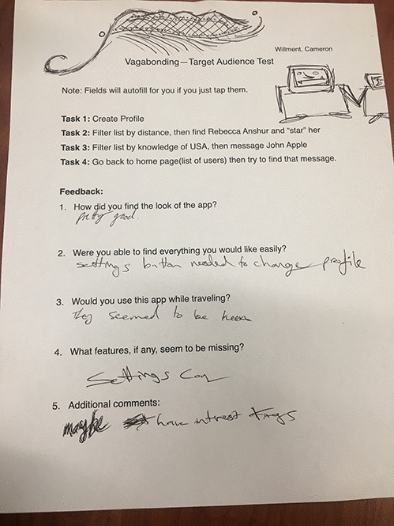

Audience Test Results
Vagabonding

I got a lot of really good feedback fromt his assignment. People for the most part thought the app
was good, which really made me happy. They liked the idea and thought it was uselful. They also said
the design was good which I was happy about. They mentioned some things I could improve on. They said a settings
cog would be good so a user could edit their profile. They also got a suggestion to include interest tags, but
I don't think I am going to do that because I want the profile set up to be very easy. They said I should change
"found" header to something else--I think I am going to use "chat". They also said when you are creating your profile
to show what the circles are meant for because it is not clear that it is for selecting your county. Also I think I am
going to make it a slide to start instead of a tap, which someone recomended to me.